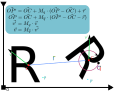

Conventions
In the ART code, we use some conventions. In order to obtain the expected results, please use those conventions.
Units
The distances in ART are in millimeters. The angles are stored and calculated in radians, but for input/output, they are converted to degrees.
Incidence planes
The default incidence plane is \((\vec{x},\vec{z} )\), with \(\vec{z}\) being the default propagation direction. All elements are created by default with a normal vector pointing towards positive \(\vec{z}\). For a horizontal incidence plane, this means that \(\vec{y}\) is the vertical axis.
Orientation
Some objects that are manipulated by ART are best seen as solid objects, that have 6 degrees of freedom (6DOF). That means that we can calculate the position of any point on that object if we agree on the definition of a basepoint around which to perform calculations and:
- A translation vector \(\v r\) that describes the position of the basepoint
- A rotation quaternion \(\mathfrak{q}\) that describes how the object has been rotated around that basepoint.
Essentially, every optical element is defined initially in the lab reference frame in a certain orientation and position. All the special points and vectors of the object are defined in that orientation and position. The object is then translated and rotated around the basepoint to bring it to its final position.
The initial position and orientation of the object define its reference frame, and for each type of object you should refer to the schematic drawing in the documentation in order to know how the actual object is positionned within that reference frame. In the code, the attributes of an object as defined within its reference frame are annotated with _ref.
The illustration below shows the formulas allowing to go from one reference frame to the other for both a point \(P\) on the object and a direction vector \(\vec{v}\). In the drawing, \(C\) is the basepoint.

Important vectors
As mentionned above, an object in ART is defined initially within its own reference frame. Considering the case of an ellipsoidal mirror, the python object will contain an attribute “Support” that defines the overall shape of the mirror and is in the \((\vec{x_0},\vec{y_0})\) of the object reference frame. The points of the mirror are defined as a function \(z_0(x_0,y_0)\). And we also define a few important vectors: support_normal (that is always [0,0,1]), focus_1 and focus_2 that point from the center of the mirror to the focal points.
TODO this whole section
Despite its name, the “normal” vector has got nothing to do with normal incidence on an optic. Indeed, a better name would be “support_normal” or “standard” vector. Generally, it’s the vector normal to the support of each optic. To see what it corresponds to with respect to the optical axes, one should look at the documentation of each type of mirror
Understanding how this vector is oriented is critical to properly aligning the optical system.